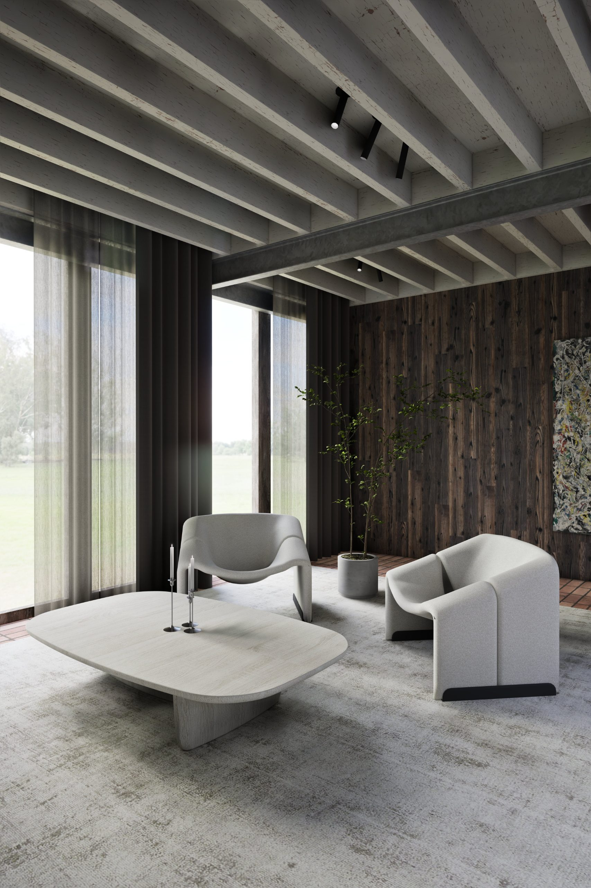
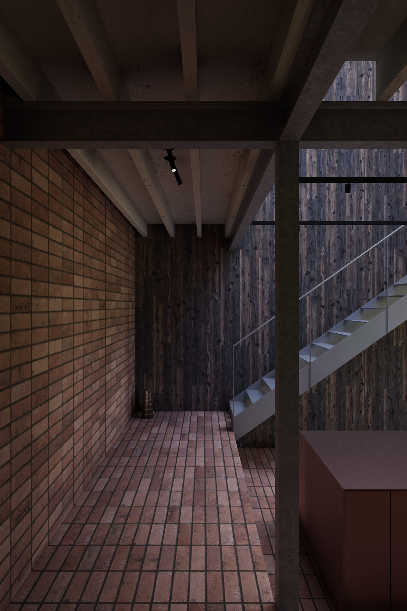

(02) — Over het project
Ger is een gelijkvloerse woon- en keukenruimte in een Antwerpse rijwoning — een smal volume opengebroken tot één breed, doorlopend interieur dat zich van kookeiland tot raam ontvouwt.
De bestaande structuur bleef zichtbaar: staalconstructie en circulair houten ribbeplafond als drager van de ruimte, terracottategels als doorlopende grond. Het eiland staat als een sculptuur in de keuken — gevat in mat brons, warm en gedekt — en markeert het hart van de woning zonder opbouw of bovenbouw.
Duurzaamheid zit hier niet in een label maar in de keuze van materialen die rijpen. Verweerd hout, gebakken tegel, zichtbaar staal en een enkel messingaccent — elk element eerlijk in zijn aard, gekozen om met de jaren mooier te worden.

01 — Overzicht, keuken en salon in één doorlopende ruimte

02 — Kookeiland in mat brons

03 — Leefzone, ribbeplafond en daglicht

04 — Trappenhal en keuken, terracottaruimte

05 — Salon, linnen gordijnen en landschap

06 — Gang, terracottamuurtegel en trap
Over de materialen
De vloer is één doorlopend raster van handgevormde terracottategel — de kleur van droge aarde — die keuken, salon en gang materieel met elkaar verbindt. Wanden zijn bekleed met donker, verticaal geplaatst hout: gebrand tot diepbruin, met een nerf die voelbaar blijft onder de hand. De trappartij is van staal — onverhuld en constructief eerlijk. Het circulaire houten ribbeplafond toont de structuur van de woning zonder omhulsel — gedragen door de staalconstructie die onverhuld in de ruimte staat.
In de keuken staat het eiland in mat brons als één compact, grondgebonden volume. Geen bovenbouw, geen opbouw — enkel een messingkraan als warm accent. In de leefruimte staan twee ronde stoelen in lichtgrijs textiel tegenover een salontafel in licht hout; het gezichtspunt richt zich naar de vliesgevel en het landschap buiten. Materialen die niet verslijten maar rijpen.